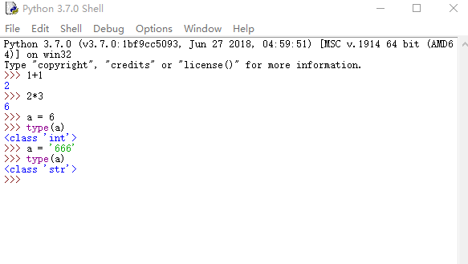
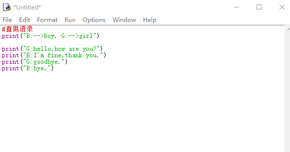

课程内容：
为什么要学习python
如何学python
实践体验
图片来源网络分享
为什么要学python：
简单 （设计如此）
强大（因为开源，有库）
如何学习python：
变量 --> 运算 -->条件 --> 循环
实践体验：
IDLE就可写python代码，如同我们的草稿本一般贴心。可运算，有提示
输入一半，按Tab键即可冒出提示，alt+p回出现上一句指令

按 Ctrl + n 即可打开我们的作业本，愉快的书写

F5即可运行代码
我们学的第一句简单而很有用的代码
print（“xxx”）
1 #直男语录
2 print("B:-->boy, G:-->girl")
3
4 print("G:hello,how are you?")
5 print("B:I'm fine,thank you.")
6 print("G:goodbye.")
7 print("B:bye.")
运算：
1、算术运算，+ ，- ，* ，/， //，%，**
2、关系运算， > , < , >=, <=, !=
3、逻辑运算 ，and ， or ，not
>>> 1+1
2
>>> 2*3
6
>>> 2**3
8
>>> 10%3
1
>>> 10/3
3.3333333333333335
>>>
变量：
变量是有类型的，不同类型的作用不一样，使得我们可以很好的干多种多样的活。type()指令可查看类型
注意：变量专业来说要做到顾名思义，可以字母，数组，下划线组成，不能以数组开头
a = 888
type(a)
>>> a = 6
>>> type(a)
<class 'int'> #说明是整数类型
>>> a = '666'
>>> type(a)
<class 'str'> #说明是字符串类型输入input()的数类型：
b = input()得到的b是字符串类型数据，可以用int(b)将b转换为整数型数据
1 >>> b = input()
2 66
3 >>> b
4 '66'
5 >>> type(b)
6 <class 'str'>
7 >>> b*3
8 '666666'
9 >>> 3*b
10 '666666'
11 >>> c = int(b)
12 >>> c
13 66
14 >>> 3*c
15 198
16 >>> 优化用户体验，加入输入提示语：
b = input("提示语：")
变量无需定义，即用即定义
可以解决的问题：
1、输入半径，输出圆的面积
2、输入路程，求得车费
课程回顾：
首先是简单的输出体验print，简单运算，后面学习变量的创建，最后学习输入input的数据类型。综合的通过运用上面知识解决一些简单数学问题。